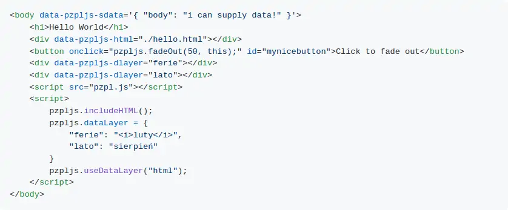

JavaScript
Biblioteka JS, stworzona aby szybciej tworzyć strony.
Funkcje:
- Ładowanie HTML
- Zarządzanie danymi
- Dynaminczne Ładowanie JS i CSS
- Skrót $ do wybierania DOMu
- Animacje "Fade In" i "Fade Out"
- Możliwość kustomizacji biblioteki, można wybierać jakie funkcje chce się załadować